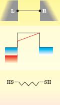
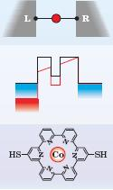
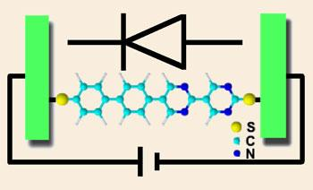
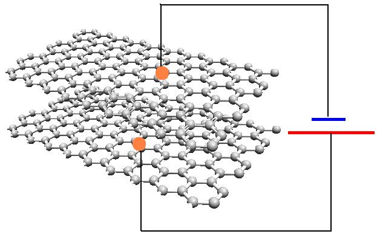

A simple non-conjugated organic molecule acting as nanoconductor. This molecule separtes two gates with linear potential drop (the central panel).
The internal carbon atoms play as a bridge to transport charge (electron) from high potential area (right gate) to low potential area (right gate). They can either form a conjugated system, or saturated for more resistance, i.e., a continous spectrum of conductivity.
How Femto can be employed in nanoelectronics?
There is one-to-one correspondence between the components used in conventional electronics engineering and nanoelectronics. Three important parts are wire (resistor), rectifier, capacitor, and switch. In the following, the molecuolar version of these components are examplified:
Conductor
Rectifier
A nanorectifier consists of a single molecule in which charge can be transported in one direction easier than the other. In practice, all asymmetric molecules can behaves as rectifier; however, in practice, the nanorectifier must include charge donor, charge acceptor and bridge parts. The donor part should possess high energy lone pair orbitals while the acceptor part should hardly act as donor, so that reverse charge transport is rather prohibited.

Capacitor
Capacitors are composed of two conducting material planes. What can be more planar than graphene? A bilayer graphene structure acts as a supercapacitor when exposed to external potential (field). The gap between th two layers can be filled by any molecule the user wishes to. In the simplest case, no filling is required, i.e., there is vacuum. The electronic charge in the two graphene layers then experience different potentials which forces electrons to transport to the other layer, what is expected for a capacitor. Computation of electronic excess charge on the layers is quite a straight forward routine in computational chemistry!
Switch
It does not much differ with simple conductor, but is governed by the existence of some other factor. This factor might be an external field (field effect transistor), or some metal atom. The left figure shows how a metal atom is trapped in the inner hole providing a low energy area, so that facilates charge transport between the two gates. It can be also used as a nanosensor which responces to the existence of certain metal atoms with certain amount of net charge. Obviously, the effect of each metals resemblels their unique finger print!
Copyright © 2014, Femto Program. All Rights Reserved.